二分查找简介
二分查找也称折半查找（Binary Search），它是一种效率较高的查找方法。但是，折半查找要求线性表必须采用顺序存储结构，而且表中元素按关键字有序排列。
算法要求
必须采用顺序存储结构
必须按关键字大小有序排序
时间复杂度
O ( log 2 n ) O(\log_{2}{n}) O ( log 2 n )
二分查找框架
1 2 3 4 5 6 7 8 9 10 11 12 13 14 15 int binarySearch (int [] nums, int target) int left = 0 , right = ...; while (...) { int mid = left + ((right - left) / 2 ); if (nums[mid] > target) { right = ... } else if (nums[mid] < target) { left = ... } else { ... } } return ...; }
... 标记的地方是需要特别注意的地方代码中用 left + (right - left) / 2 来代替 (left + right) / 2 ，可以有效地防止 left 和 right 太大导致相加后溢出。也可以使用 left + (right - left) >> 1 ，使用位运算会更快
基本的二分查找
搜索一个数，如果存在，返回其索引，否则返回 -1
查找区间为[left, right]的写法
第一种写法，我们定义 target 是在一个在左闭右闭的区间里，也就是[left, right] （这个很重要非常重要） 。
区间的定义决定了二分法的代码应该如何写，因为定义target在[left, right]区间，所以有如下两点：
while (left <= right) 要使用 <= ，因为left == right是有意义的，所以使用 <=
if (nums[mid] > target) right 要赋值为 mid - 1，因为当前这个nums[mid]一定不是target，那么接下来要查找的左区间结束下标位置就是 mid - 1
例如在数组：1,2,3,4,7,9,10中查找元素2，如图所示：
1 2 3 4 5 6 7 8 9 10 11 12 13 14 15 16 int search (vector<int >& nums, int target) int left = 0 ; int right = nums.size () - 1 ; while (left <= right) { int mid = left + ((right - left) / 2 ); if (nums[mid] > target) { right = mid - 1 ; } else if (nums[mid] < target) { left = mid + 1 ; } else { return mid; } } return -1 ; }
查找区间为[left, right)的写法
如果说定义 target 是在一个在左闭右开的区间里，也就是[left, right) ，那么二分法的边界处理方式则截然不同。
有如下两点：
while (left < right)，这里使用 < ,因为left == right在区间[left, right)是没有意义的
if (nums[mid] > target) right 更新为 mid，因为当前nums[mid]不等于target，去左区间继续寻找，而寻找区间是左闭右开区间，所以right更新为mid，即：下一个查询区间不会去比较nums[mid]
在数组：1,2,3,4,7,9,10中查找元素2，如图所示：（注意和方法一的区别 ）

1 2 3 4 5 6 7 8 9 10 11 12 13 14 15 16 int search (vector<int >& nums, int target) int left = 0 ; int right = nums.size (); while (left < right) { int mid = left + ((right - left) / 2 ); if (nums[mid] > target) { right = mid; } else if (nums[mid] < target) { left = mid + 1 ; } else { return mid; } } return -1 ; }
寻找一个数的左右边界
具体见STL中lower_bound和upper_bound的用法
查找左侧边界
1 2 3 4 5 6 7 8 9 10 11 12 13 14 15 int lower_bound (vector<int > &nums, int k) int left = 0 , right = nums.size () - 1 ; while (left < right) { int mid = left + ((right - left) >> 1 ); if (nums[mid] >= k) right = mid; else left = mid + 1 ; } if (nums[left] < k) left++; return left; }
查找右侧边界
1 2 3 4 5 6 7 8 9 10 11 12 13 14 15 int upper_bound (vector<int > &nums, int k) int left = 0 , right = nums.size () - 1 ; while (left < right) { int mid = left + ((right - left) >> 1 ); if (nums[mid] > k) right = mid; else left = mid + 1 ; } if (nums[left] <= k) left++; return left; }
*寻找重复值的左右边界
寻找一个数在单调不递减序列中第一次出现的位置（左侧边界）和最后一次出现的位置（右侧边界），如果不存在该数则返回 -1
寻找左侧边界
查找区间为[left, right]的写法
1 2 3 4 5 6 7 8 9 10 11 12 13 14 15 16 17 18 19 20 21 22 23 24 int left_bound (vector<int >& nums, int target) int left = 0 ; int right = nums.size () - 1 ; while (left <= right) { int mid = left + ((right - left) / 2 ); if (nums[mid] < target) { left = mid + 1 ; } else if (nums[mid] > target) { right = mid - 1 ; } else { right = mid - 1 ; } } if (left >= nums.size ()) return -1 ; return nums[left] == target ? left : -1 ; }
查找区间为[left, right)的写法
1 2 3 4 5 6 7 8 9 10 11 12 13 14 15 16 17 18 19 20 int left_bound (vector<int >& nums, int target) int left = 0 ; int right = nums.size (); while (left < right) { int mid = ((left + right) / 2 ); if (nums[mid] == target) { right = mid; } else if (nums[mid] < target) { left = mid + 1 ; } else if (nums[mid] > target) { right = mid; } } if (left == nums.size ()) return -1 ; return nums[left] == target ? left : -1 ; }
寻找右侧边界
查找区间为[left, right]的写法
1 2 3 4 5 6 7 8 9 10 11 12 13 14 15 16 17 18 19 20 21 int right_bound (vector<int >& nums, int target) int left = 0 ; int right = nums.size () - 1 ; while (left <= right) { int mid = left + ((right - left) / 2 ); if (nums[mid] < target) { left = mid + 1 ; } else if (nums[mid] > target) { right = mid - 1 ; } else { left = mid + 1 ; } } if (left <= 0 ) return -1 ; return nums[left - 1 ] == target ? left - 1 : -1 ; }
查找区间为[left, right)的写法
1 2 3 4 5 6 7 8 9 10 11 12 13 14 15 16 17 18 19 20 int right_bound (vector<int >& nums, int target) int left = 0 ; int right = nums.size (); while (left < right) { int mid = left + ((right - left) / 2 ); if (nums[mid] == target) { left = mid + 1 ; } else if (nums[mid] < target) { left = mid + 1 ; } else if (nums[mid] > target) { right = mid; } } if (left == 0 ) return -1 ; return nums[left - 1 ] == target ? left - 1 : -1 ; }